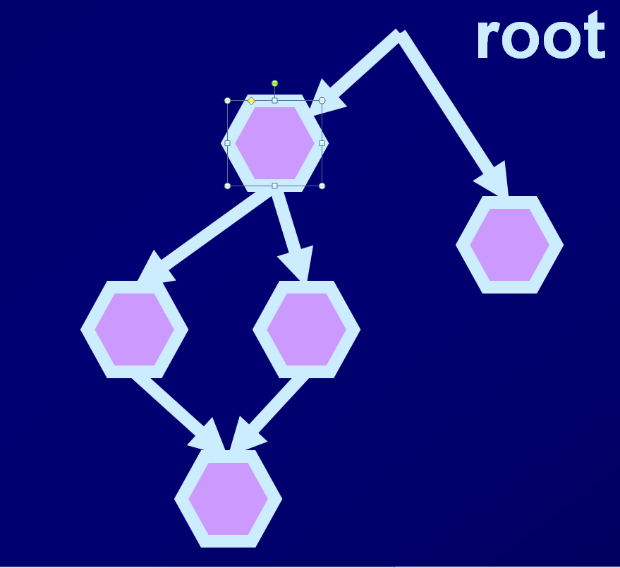
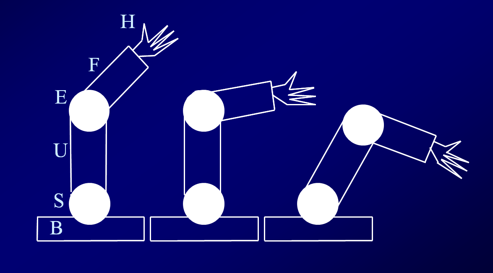
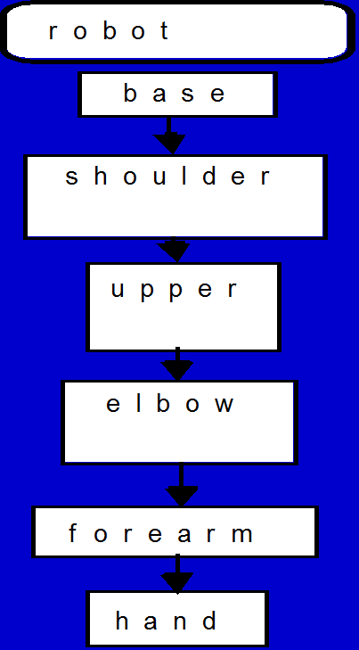
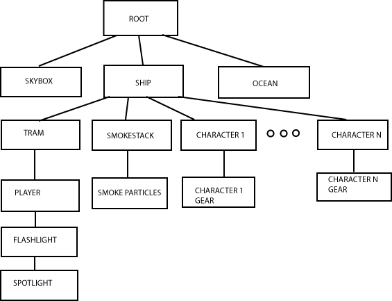
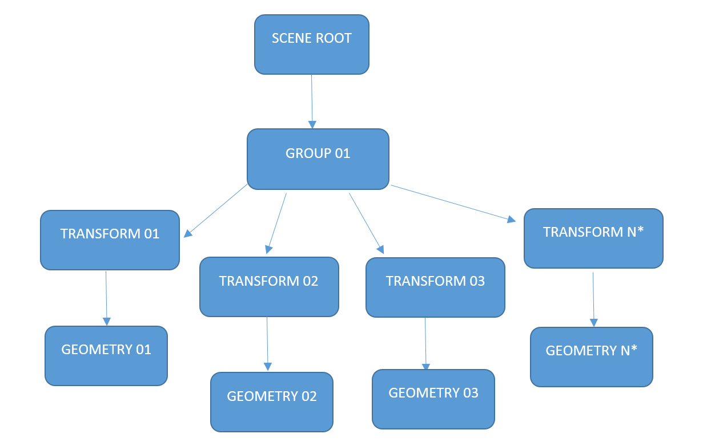

Overview of Today
- Scene Graphs
Concept of a Scene Graph
- Objects placed relative to one another
- Objects made of similar components
- Directed acyclic graph (used as a data structure)

Use for Animation/Modelling

How it works
- Each object has a local transformation relative to its parent
- shoulder is translation (0 1 0) from base
- upper arm is translation (0 3 0) from shoulder
- elbow is translation (0 3 0) from upper arm
- forearm is rotation Z by -90 then translation (0 2 0)
How it works - diagram

How it works - Rendering Traverse
- For each object to render correctly, it needs its modelMatrix to be known in WorldCoordinates
- For baseObject, this is straightforwards - its own matrix is already in WC
- For all children objects, their own matrix is relative to its parent
- so we must multiply its relative matrix by its parent's WC matrix
- and continue down the graph
- i.e. we "inherit" matrices down the stack (graph)
How it works - diagram
Scene Graph Efficiency
- calcualting all the inherited values is relatively expensive
- we should try to minimise how much we have to recompute these values
- Discuss ...
Another example

Another example (generic)

Instancing
- saving memory (CPU and GPU)
- increasing cache coherence
- https://www.panda3d.org/manual/index.php/Instancing

Instancing: Caveat
- Instancing saves CPU time and GPU space
- But the renderer still needs to render the model multiple times
- If we have a 1000 polygon model, and 150 instances, we still have 150,000 polygons
Instancing in practice
- Most modern hardward supports hardware instancing
- Unfortunately, as of early 2015, Monogame does not yet support hardware instancing
- http://community.monogame.net/t/hardware-instancing-not-supported/356
Instancing in OpenGL
- hardware instancing supported since OpenGL 3.1
- online guides:
- https://www.opengl.org/wiki/Vertex_Rendering#Instancing
- http://www.gamedev.net/page/resources/_/technical/opengl/opengl-instancing-demystified-r3226
- http://ogldev.atspace.co.uk/www/tutorial33/tutorial33.html
- http://sol.gfxile.net/instancing.html
Impact of instancing
- from http://sol.gfxile.net/instancing.html
- tested on two computers. Both Core i7, 8 GB of RAM and win7 64bit
- Nvidia gtx260
- ATI hd5700 (we're going to ignore this for now)
- Screen refresh sync was turned off for all tests
- 64000 instances
- geometry includes:
- cubes in vertex arrays (VA)
- cubes in vertex buffer objects (VBO)
- low (~80 tris) poly count toruses (VBO)
- high (~230 tris) poly count toruses (VBO)
Impact of instancing 2
| Situation | Nvidia | |||
|---|---|---|---|---|
| Cubes(VA) | Cubes(VBO) | Torus(lo) | Torus(hi) | |
| No shaders | 59.3ms | 41.1ms | 41.1ms | 55.3ms |
| Plain shaders | 86.7ms | 80.5ms | 81.0ms | 80.4ms |
| Pseudoinstancing | 70.1ms | 30.0ms | 30.4ms | 51.9ms |
| Matrices in texture | 41.0ms | 10.4ms | 22.8ms | 50.7ms |
| Matrices in uniforms | 45.5ms | 18.7ms | 23.1ms | 50.5ms |
| Instanced arrays | 11.3ms | 22.8ms | 53.2ms |
Groups and Leaves
- A Directed Acyclic Graph consists of a set of nodes connected with Directed relationships, containing no Cycles
- Our DAG consists of two types of node
Group nodes
- any number of child nodes attached to it
- include transformations and switch nodes
Leaf nodes
- nodes that are actually rendered or show the effect of an operation
- for us so far, this is meshes (objects)
- can also include:
- sprites
- cameras
- lights
- sounds
- and anything that could be considered 'rendered' in some abstract sense
Cameras
- the World Coordinate transformation applied to our camera will be the camera's relative transformation combined with the inherited transformations
- thus we can have:
- a camera we can control in World Coordinates
- connected to the root of the scene graph
- a camera that moves with an object
- connected to the transform node of an object, with an identity matrix for the camera
- a camera that moves with an object, but with relative change
- connected to the transform node of an object, with a non-identity matrix for the camera
- a camera we can control in World Coordinates
Lights
- the World Coordinate transformation applied to each light will be the light's relative transformation combined with the inherited transformations
- thus we can have:
- a light we can control in World Coordinates
- connected to the root of the scene graph
- a light that moves with an object
- connected to the transform node of an object, with an identity matrix for the camera
- a light that moves with an object, but with relative change
- connected to the transform node of an object, with a non-identity matrix for the camera
- a light we can control in World Coordinates